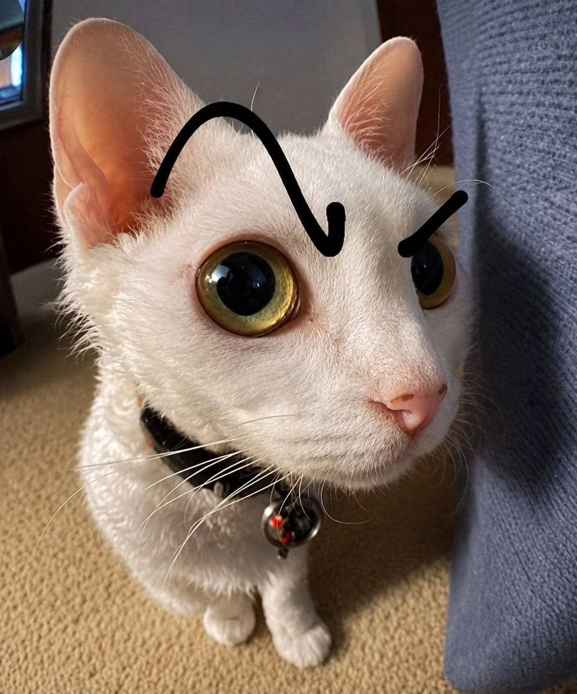
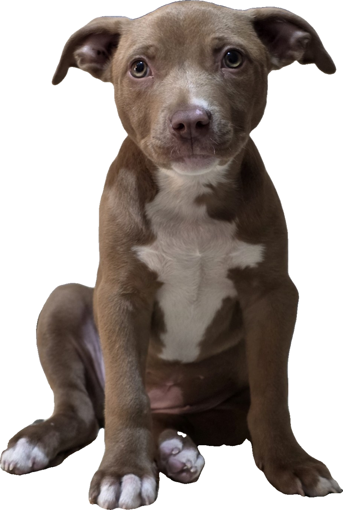
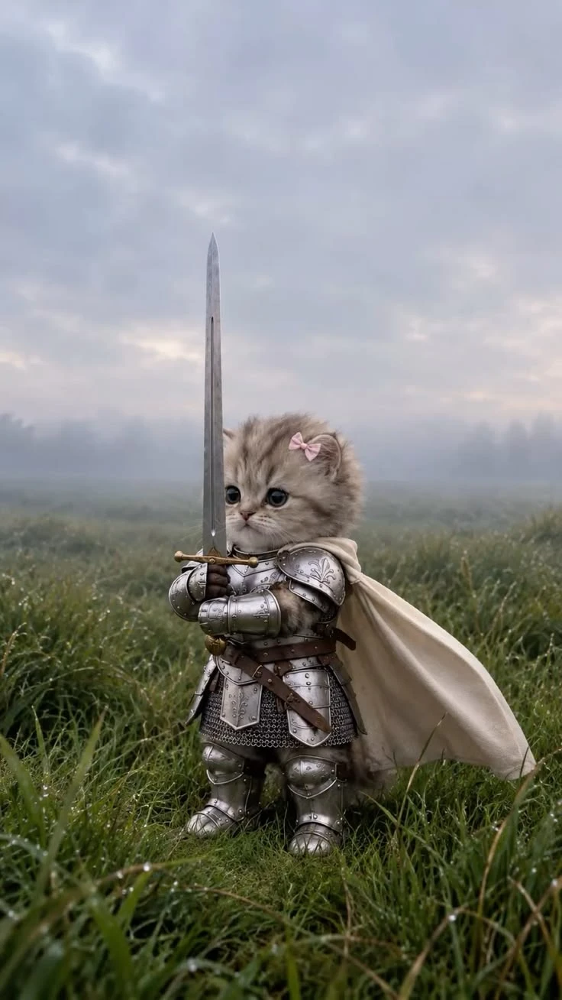

by barbara f tatsch
//@barbarafonsecavet
O que ele tenta te dizer
[na hora da vacina?]
by barbara f tatsch
//@barbarafonsecavet
Orelha pra trás,olho arregalado
corpinho encolhido, rabo escondido. Isso é medo.
by barbara f tatsch
//@barbarafonsecavet

Medo não é manha.
Ele não tá sendo chato. Ele tá tentando se proteger.
by barbara f tatsch
//@barbarafonsecavet
Por isso, na minha consulta:

luz baixa, música e petisco na mão.
by barbara f tatsch
//@barbarafonsecavet
O petisco é meu aliado 🦴
Enquanto ele come, eu aplico. E a vacina passa bem mais tranquila.

by barbara f tatsch
//@barbarafonsecavet
E no fim, certificadode coragem 🏅
Todo paciente meu ganha um. Quem segurou firme na hora também merece.
by barbara f tatsch
//@barbarafonsecavet
Seu bichinho fica nervoso no vet? Me conta como ele reage 👇